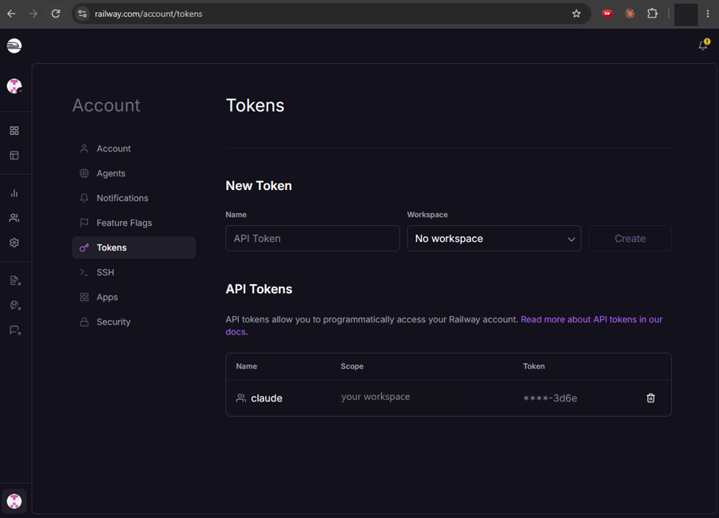
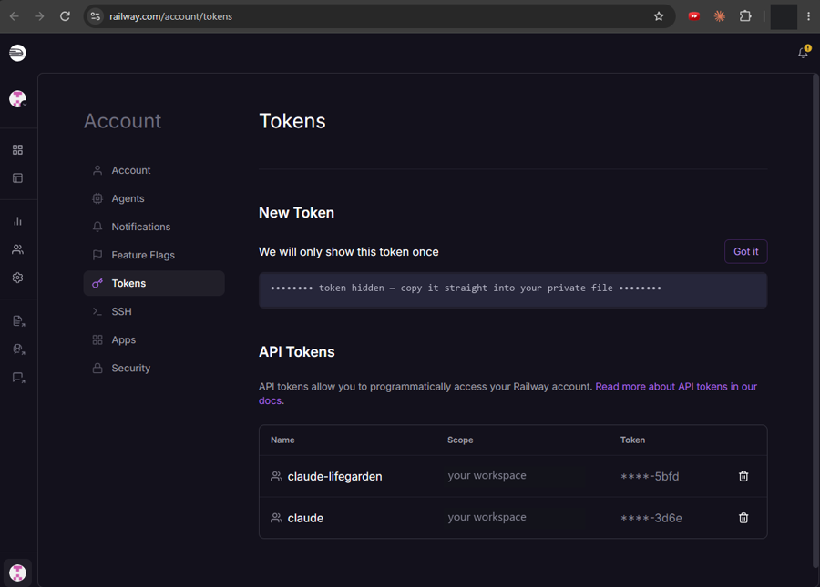

Go live
Pick what you need: A for your own website address, or B for Google sign-in. Tap one to open it, then tap each step.
Example: domain bought at GoDaddy, site on Railway. About 10 minutes, then up to a few hours of waiting.
Claude needs permission to change things in your Railway account (add the domain, read the records). Pick one way:
Way 1 · Sign in through the Railway plugin (easiest)
/plugin and install railway (once)./mcp → choose railway → Authenticate.Way 2 · A Railway token in a private file
claude-myproject, pick your workspace, click Create.

.env). Paste the token into that file, not into the chat, save with Ctrl+S, then type just the word pasted in the chat.I want you to manage my Railway account for this project. Create a private settings file for a Railway token (kept out of GitHub), open it for me, and I'll paste the token in myself. Then check you can see my Railway projects.
Done when Claude lists your Railway projects. Then go to step 1.
Keep the token private. Never paste it or screenshot it into a chat: anyone who sees it can control your projects. If that happens, or when the project is finished, delete it on the same Railway page with the bin icon.
I bought yourdomain.com at GoDaddy and want it to show my site on Railway. 1. On Railway, add www.yourdomain.com to my site (reuse it if it's already there) and get the DNS records it needs. 2. Open GoDaddy in your browser, on the DNS page for yourdomain.com. If it asks me to sign in, stop and let me sign in myself. Never type my password or a code. 3. Make only these changes: - set the www CNAME record to Railway's value, - add Railway's TXT verification record, copied exactly, - forward yourdomain.com to https://www.yourdomain.com (Permanent 301, forward only, no masking). GoDaddy may replace the "Parked" record by itself when it saves the forwarding. That's expected. 4. Change nothing else, don't change nameservers, buy nothing, accept no upsell. If a screen looks different, stop and ask me. 5. Show me exactly what you changed. 6. Keep checking from outside (public DNS, not just this computer, which can remember the old address for an hour) until Railway shows the domain verified and https://www.yourdomain.com opens my site. Tell me when it does, and whether yourdomain.com without www forwards yet (that part can take a few hours). 7. Then list anything in my project that still uses the old address (payment return pages, email links, sign-in settings) and ask me before changing any live setting.
Type your domain in the box, then Copy. Bought it somewhere other than GoDaddy, or hosting elsewhere than Railway? Change those words after pasting.
No desktop app? Ask Claude Code to write steps 2–4 as a prompt for Claude in Chrome, sign in to GoDaddy in Chrome, and paste it into the Claude side panel.
Google accounts: do part B by hand. Letting a browser AI into your Google account is a bigger risk than a DNS page.
The sign-in popup shows your Google app's name, so give each brand its own app. About 10 minutes at console.cloud.google.com.
New project (illustration)
Consent screen (illustration)
Audience (illustration)
Authorised JavaScript origins (illustration)
Your new client (illustration)
I created a Google sign-in app for [brand]. Client ID: [paste it]. Make the site use it, check that sign-ins are only accepted for this app, and tell me which production setting you need to change before you change it.
The error (illustration)
The site's address is missing from step B4. Add it exactly, save, wait 5 minutes, try again.
Google sign-in shows "Error 400: origin_mismatch" on [page address]. Tell me exactly which address to add under Authorised JavaScript origins.
Do step B3: publish the app so it reads In production.
Forwarding can take a few hours to start. If it still shows parking after that, ask Claude to check the forwarding and that the CNAME's Name is www, not @.
Usually a typo in the TXT record. Ask Claude to check it from outside (prompt below).
My domain still isn't verified. Check my DNS records from outside and tell me exactly which record is wrong and what it should be.